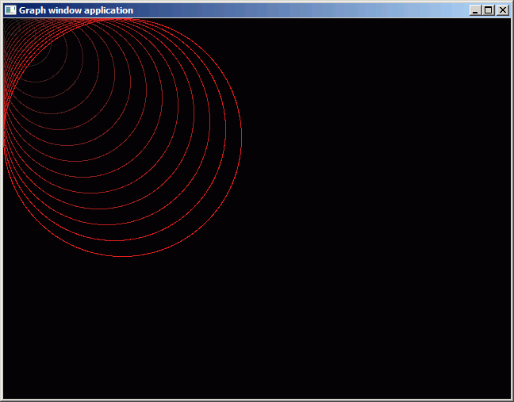

12. Creación de gráficos
12.1. Contacto con los gráficos por ordenador.
Casi cualquier ordenador creado después de 1985 permitirá no sólo escribir textos, sino también acceder de forma individual a los puntos que forman la pantalla. La cantidad de puntos y de colores que se pueden mostrar en pantalla de forma simultánea depende principalmente de la cantidad de memoria gráfica que tenga el sistema. Por ejemplo en un equipo "PC o compatible" que tenga una tarjeta gráfica VGA o posterior (a partir del año 1988), con 256 kb de memoria gráfica, podríamos optar, entre otros, por un modo con 640x480 puntos en 16 colores, o si necesitamos mayor cantidad de colores simultáneos uno de 320x200 puntos con 256 colores (en el que, a cambio de más colores, tendremos "menos puntos" en pantalla, lo que implica que los puntos serán "más gordos" y las imágenes serán menos definidas).
Incluso en un ordenador que permita crear gráficos, no siempre será posible realizarlo desde un cierto lenguaje. Para eso necesitaremos tener los "drivers" adecuados, que permitan acceder a esos modos gráficos desde nuestro entorno de programación.
En general, esos drivers nos permitirán al menos dibujar puntos en ciertas coordenadas de pantalla usando cierto color. Es habitual que también dispongamos de órdenes para dibujar líneas, círculos o rellenar zonas. En algunos entornos más avanzados podremos incluso mostrar imágenes a partir de ficheros, o indicar niveles de transparencia, o mover "figuras animadas" (conocidas como "sprites") por pantalla sin demasiado esfuerzo.
En el caso del lenguaje Pascal, no existe un estándar oficial aceptado por todos los compiladores, pero sí existen una serie de funcionalidades que se podían conseguir desde Turbo Pascal y que imitan los compiladores que buscan compatibilidad con él, como Free Pascal y TMT Pascal. Nosotros nos centraremos en esos sistemas: Turbo Pascal (versión 5 y posteriores) y compatibles, que son los más extendidos.
12.2. Nuestro primer gráfico con Turbo Pascal y Free Pascal.
Junto con Turbo Pascal (y Turbo C/C++), se distribuían unos drivers, los BGI (Borland Graphics Interface), que son los que se encargan de acceder a la pantalla. Así, nosotros no tenemos más que decir "dibuja un punto", y el BGI sabrá como hacerlo, en función de la tarjeta gráfica que haya instalada y del modo de pantalla (cantidad de puntos y de colores disponibles) que queramos usar.
Existen otras alternativas, como podría ser el acceder directamente a la memoria de pantalla, con lo que podemos conseguir una mayor velocidad y un menor tamaño del programa ejecutable (.EXE) resultante, pero a cambio será mucho más difícil crear el programa y su portabilidad será menor: no se podrá llevar con facilidad a otro sistema. Veremos más adelante un breve contacto con esta forma de trabajar.
Un ejemplo básico que dibuje una línea en pantalla, desde la esquina superior izquierda hasta el centro de la pantalla, usando los drivers BGI podría ser así:
(* GRAPH01.PAS, Linea en modo gráfico *)
(* Parte de CUPAS5, por Nacho Cabanes *)
program Graph01;
uses Graph;
var
Driver, Modo: Integer;
begin
Driver := Vga; { Para pantalla VGA (o superior) }
Modo := VgaHi; { Modo 640x480, 16 colores }
InitGraph(Driver, Modo, 'c:\tp\bgi'); { Inicializamos }
Line( 0, 0, 320, 240 ); { Línea en blanco }
Readln; { Esperamos a que pulse Intro }
CloseGraph { Y se acabó }
end.

(En Free Pascal para Windows y para DOS debería funcionar igual, aunque quizá aparezca una segunda ventana de consola, que es en la que habría que pulsar Intro para terminar:

Los pasos que sigue este programa son:
- Debe comenzar indicando que va a utilizar la unidad Graph ("uses graph").
- Ya en el cuerpo del programa, debemos inicializar el sistema de gráficos mediante el procedimiento InitGraph. Este tiene como parámetros los siguientes:
- El código del driver concreto de tarjeta gráfica que vamos a usar (VGA funcionara en cualquier equipo moderno, o podemos optar por Detect si tenemos un equipo antiguo y queremos que detecte automáticamente cual está instalada; luego veremos qué otras opciones hay).
- El modo de pantalla que vamos a usar para ese driver (los modos disponibles dependerán de cada driver; de momento usaremos VgaHi para el modo VGA de alta resolución, con 640x480 y 16 colores; luego veremos otras opciones).
- El directorio en el que están los drivers.
Para Turbo Pascal se debe indicar el directorio, porque los drivers están en forma de unos ficheros de extensión BGI: HERC.BGI, CGA,BGI, EGAVGA.BGI, etc., que el programa buscará en el momento de ejecutarlo. Para Free Pascal no es necesario indicar ningún directorio, pero puede haber problemas de portabilidad: con Free Pascal para MsDos quiza no funcione otro driver que no sea VGA, lo mismo puede ocurrir bajo ciertas versiones de Windows.
En Linux quizá no esté incluida la biblioteca "graph" porque se considera obsoleta (además de algún problema adicional, como apoyarse en "svgalib", que sólo puede usada "root", el administrador del sistema), pero en ese caso puedes probar a ver si tienes suerte y compila con "uses ggigraph" o con "uses "ptcgraph", que son dos bibliotecas alternativas (que no son parte de todas las distribuciones de Free Pascal). En cualquier caso, asume que quizá no puedas hacer funcionar estos ejemplos en Linux.
Cuando terminemos de usar la pantalla en modo gráfico, deberemos usar la orden CloseGraph para cerrar el modo gráfico .
12.3. Detección de modo gráfico
Si usamos el código "detect" para que el compilador intente detectar la tarjeta que hay instalada en el ordenador en el cual esté funcionando el programa, no hace falta indicar el modo, sino que él tomará el de mayor resolución que permita esa tarjeta.
En este caso, no sabemos a priori el número de puntos que hay en pantalla, ni la cantidad de colores, pero lo podemos descubrir mirando los valores de GetMaxX, GetMaxX y GetMaxColor.
(* GRAPH02.PAS, Autodetección de modo gráfico *)
(* Parte de CUPAS5, por Nacho Cabanes *)
program Graph02;
uses Graph;
var
Driver, Modo: Integer;
centroX, centroY: Integer;
begin
Driver := Detect;
InitGraph(Driver, Modo, 'c:\tp\bgi');
centroX := GetMaxX div 2;
centroY := GetMaxY div 2;
Line( 0, 0, centroX, centroY );
Readln;
CloseGraph
end.
En "FreePascal", en que GetMaxX puede tener un valor muy grande, quizá obtengamos un mensaje de error: Incompatible types: got "Extended" expected "SmallInt". En ese caso,
12.4. Principales órdenes gráficas
Las órdenes gráficas más habituales son:- PutPixel(x,y,color): dibuja un punto en un color dado.
- Line(x1,y1,x2,y2): dibuja una linea con el color y estilo predefinido.
- SetColor(color): escoge el color predefinido, que se usará a partir de ese momento.
- SetLineStyle(estilo, patron, color): cambia el estilo con que se dibujarán las líneas. Para elegir el estilo de línea, tenemos predefinidas constantes como SolidLn (línea continua), DottedLn (de puntos), etc. Para el grosor también tenemos constantes: NormWidth (normal), ThickWidth (gruesa).
- Circle(x,y,radio): dibuja un circulo con el color predefinido.
- Ellipse(x,y,anguloIni, anguloFin, radioX, radioY): dibuja una elipse o un arco de elipse.
- Arc(x,y,anguloIni, anguloFin, radio): dibuja un arco circular.
- Rectangle(x1,y2,x2,y2): dibuja un rectángulo con el color y el tipo de línea predefinido. Los puntos son las esquinas superior izquierda e inferior derecha
- Bar(x1,y1,x2,y2): dibuja un rectángulo relleno con el color de relleno (y el patrón de relleno, si es el caso) dados por SetFillStyle y SetFillPattern.
- SetFillStyle(patron, color): elige el patrón y color de relleno.
- SetFillPattern(patron, color): permite redefinir el patrón con que se rellenarán las figuras.
- Bar3D(x1,y1,x2,y2,profund,tapa): dibuja un rectángulo relleno, con una cierta profundidad en 3D (si la profundidad es 0, equivale a "Bar" pero como una barra exterior.
- FloodFill(x,y,borde): rellena una zona cerrada, cuyo borde sea de un cierto color. Usa el color y patrón de relleno actual.
- OutText(texto): escribe un texto en la posición actual del cursor.
- OutTextXY(x,y,texto): escribe un texto en una posición dada.
- SetTextStyle(fuente,direccion,tamaño): elige la fuente (tipo de letra), la direccion y el tamaño con que se escribirán los textos.
- (etc)
(* GRAPH03.PAS, Funciones gráficas más frecuentes *)
(* Parte de CUPAS5, por Nacho Cabanes *)
program Graph03;
uses graph;
var
driver, modo: integer;
x, y: integer;
i: integer;
begin
driver := Vga;
modo := VgaHi;
initgraph(driver, modo, '');
randomize;
{ Linea diagonal descendente }
line(0,0,639,479);
{ 200 puntos en coordenadas al azar }
for i := 1 to 200 do
PutPixel(random(640), random(480), random(15)+1);
{ 50 círculos de color al azar}
for i := 1 to 50 do
begin
SetColor(random(15)+1);
circle(random(640), random(480), random(50));
end;
{ 30 rectángulos }
for i := 1 to 30 do
begin
x := random(500);
y := random(400);
SetColor(random(15)+1);
rectangle(x, y, x+random(140), y+random(80));
end;
{ 15 rectángulos rellenos con texturas al azar }
for i := 1 to 15 do
begin
x := random(500);
y := random(400);
SetColor(random(15)+1);
SetFillStyle(random(11), random(15)+1);
bar(x, y, x+random(140), y+random(80));
end;
{ Recuadro con texto sombreado en su interior }
SetFillStyle(SolidFill, LightBlue);
SetColor(Yellow);
Bar3D(93,93,440,112, 5, true);
SetColor(Red);
OutTextXY(99,99,'Prueba del modo grafico desde Turbo Pascal');
SetColor(White);
OutTextXY(100,100,'Prueba del modo grafico desde Turbo Pascal');
{ Y un círculo cuyo interior vamos a rellenar }
SetColor(Yellow);
circle(320,200,50);
SetFillStyle(SolidFill, Blue);
FloodFill(320,200, Yellow);
{ Y hemos terminado }
readln;
closegraph;
end.
Este ejemplo debería funcionar sin ningún cambio también con Free Pascal, tanto en su versión de DOS como de Windows.
12.5. Un sencillo programa de dibujo
Vamos a ver un ejemplo de aplicación gráfica interactiva.
Otro ejemplo de programa, en este caso más sencillo, pero espero que también más útil, sería un programita sencillo de dibujo:(* GRAPH04.PAS, Programa sencillo de dibujo *)
(* Parte de CUPAS5, por Nacho Cabanes *)
program Graph04;
uses graph, wincrt;
var
driver, modo: integer;
tecla: char;
x, y: integer;
begin
{ 256 colores, 640 x 480 }
driver := D8bit;
modo := m640x480;
initgraph(driver, modo, '');
{ Comienzo en el centro }
x := GetMaxX div 2;
y := GetMaxY div 2;
SetColor(cyan);
{ Escribo una breve ayuda }
OutTextXY(3,3,
'Usa 2,4,6,8 para mover, f para finalizar');
{ Y el bloque repetitivo es el que dibuja }
repeat
putpixel(x,y, 15);
tecla := readkey;
case tecla of
'8': y := y-1;
'4': x := x-1;
'6': x := x+1;
'2': y := y+1;
end;
until tecla = 'f';
closegraph;
end.
Creo que la idea en sí es muy sencilla: si se pulsan las teclas 2, 4, 6, 8 (del teclado numérico), el puntito que dibuja se va desplazando por la pantalla, y dibujando un punto en el color 15 (que normalmente es el blanco). Cuando se pulse "f", acaba el programa.
En este ejemplo he usado la nomenclatura para drivers y modos de pantalla que propone Free Pascal (y que no se puede emplear en Turbo Pascal): el "driver" indicará la "profundidad de color": 1 bit = blanco y negro, 4 bits = 16 colores, 8 bits = 256 colores, 16 bits = 65536 colores, etc.
D1bit = 11;
D2bit = 12;
D4bit = 13;
D6bit = 14; { 64 colors Half-brite mode - Amiga }
D8bit = 15;
D12bit = 16; { 4096 color modes HAM mode - Amiga }
D15bit = 17;
D16bit = 18;
D24bit = 19; { not yet supported }
D32bit = 20; { not yet supported }
D64bit = 21; { not yet supported }
Mientras que el "modo" indica la cantidad de puntos en pantalla (no todos los modos se podrán utilizar en todos los sistemas):
detectMode = 30000;
m320x200 = 30001;
m320x256 = 30002; { amiga resolution (PAL) }
m320x400 = 30003; { amiga/atari resolution }
m512x384 = 30004; { mac resolution }
m640x200 = 30005; { vga resolution }
m640x256 = 30006; { amiga resolution (PAL) }
m640x350 = 30007; { vga resolution }
m640x400 = 30008;
m640x480 = 30009;
m800x600 = 30010;
m832x624 = 30011; { mac resolution }
m1024x768 = 30012;
m1280x1024 = 30013;
m1600x1200 = 30014;
m2048x1536 = 30015;
12.6. Jugando con la paleta de colores
Para empezar, vamos a dibujar algo parecido a un cono, formado por varios círculos. Buscamos un resultado similar a éste:
Y lo podemos conseguir así:
(* GRAPH05.PAS, Cono formado por varios círculos *)
(* Parte de CUPAS5, por Nacho Cabanes *)
program Graph05;
uses Graph;
var
Driver, Modo: Integer;
i: word;
begin
Driver := Vga;
Modo := VgaHi;
InitGraph(Driver, Modo, 'c:\tp\bgi');
SetColor(LightRed);
for bucle := 1 to 40 do { Dibujaremos 40 círculos }
circle ( bucle*5, bucle*5, bucle*5 );
Readln;
CloseGraph
end.
Hemos dibujado 40 círculos, cuyas coordenadas x e y, y cuyo radio son iguales en cada círculo. El efecto es vistoso, pero se puede mejorar...
Podemos cambiar la paleta de colores para que quede más vistoso aún. Con la orden SetRGBPalette podemos fijar los componentes de rojo, verde y azul de un cierto color base. El formato es SetRGBPalette(Color, R,G,B) donde
- Color va de 0 a 15, en este caso, y de 0 a GetMaxColor en el caso general (como ya hemos comentado, GetMaxColor es una función que nos dice el número de colores disponibles según el driver y modo que estemos usando.
- R,G,B van de 0 (negro) a 63 (intensidad máxima de cada uno de ellos) en una tarjeta gráfica VGA estándar, o podrían llegar a 255 en modos gráficos con 24 bits de color o más.
Así, nuestro "cono" retocado quedaría:
(* GRAPH05B.PAS, Cono de círculos con los colores cambiados *)
(* Parte de CUPAS5, por Nacho Cabanes *)
program Graph05b;
uses Graph;
var
Driver, Modo: Integer;
intensidad: byte;
i: word;
begin
Driver := Vga;
Modo := VgaHi;
InitGraph(Driver, Modo, 'c:\tp\bgi');
intensidad := 30;
for i := 1 to 15 do
begin
SetColor(i );
intensidad := i * 15;
SetRGBPalette(i, Intensidad, 30, 30); { Cambia la paleta }
circle ( i*10, i*10, i*10 );
end;
Readln;
CloseGraph
end.

12.7. Modos de dibujado
El siguiente ejemplo dibuja líneas desde el origen (0,0) a cada uno de los puntos de la línea inferior.
(* GRAPH06.PAS, Líneas desde el punto (0,0) *)
(* Parte de CUPAS5, por Nacho Cabanes *)
program Graph06;
uses Graph;
var
Driver, Modo: Integer;
i: word;
begin
Driver := Vga;
Modo := VgaHi;
InitGraph(Driver, Modo, 'c:\tp\bgi');
SetColor(LightRed);
for i := 0 to 639 do
line (0,0,i,479);
Readln;
CloseGraph
end.
Sencillo, ¿no? Ahora veamos lo que ocurre si dibujamos los puntos de cada línea haciendo una operación XOR con los que ya existían, en vez de dibujarlos encima simplemente. El efecto es mucho más llamativo:
(* GRAPH06B.PAS, Líneas dibujadas con XOR *)
(* Parte de CUPAS5, por Nacho Cabanes *)
program Graph06b;
uses Graph;
var
Driver, Modo: Integer;
i: word;
begin
Driver := Vga;
Modo := VgaHi;
InitGraph(Driver, Modo, 'c:\tp\bgi');
SetColor(LightRed);
SetWriteMode(XORPut); { <-- Este es el cambio }
for i := 0 to 639 do
line (0,0,i,479);
for i := 0 to 479 do
line (0,0,639,i);
Readln;
CloseGraph
end.
El efecto se obtiene a partir del resultado de la operación "XOR", que, como vimos en el tema ###, es "reversible": un segundo dibujado de un punto hace que se vuelva negro; al dibujar líneas desde un mismo origen, una gran cantidad de puntos son dibujados varias veces, lo que da lugar a patrones así de caprichosos.
El dibujado mediante XOR se empleaba en algunos de los primeros ordenadores que permitían dibujar puntos en pantalla, como forma simple de hacer animaciones, porque no hacía falta volver a borrar toda la pantalla en cada fotograma, sino sólo borrar y redibujar los elementos que hubieran cambiado de posición, y un XOR es una forma poco costosa de conseguirlo, como se ve en este ejemplo, en que se dibuja una línea y luego, para borrarla, no hace falta memorizar qué puntos habían quedado tapados por ella, sino que basta con volver a dibujar (usando XOR en ambos casos como método de dibujado):
(* GRAPH06C.PAS, Animación básica con XOR *)
(* Parte de CUPAS5, por Nacho Cabanes *)
program Graph06c;
uses Graph, WinCrt;
var
Driver, Modo: integer;
fila: word;
incremento: integer;
begin
Driver := Vga;
Modo := VgaHi;
InitGraph(Driver, Modo, 'c:\tp\bgi');
{ Triángulo para que se note que no "rompemos" el fondo al borrar }
SetColor(LightCyan);
line (320,100, 500,300);
SetColor(Yellow);
line (140,300, 500,300);
SetColor(LightGreen);
line (320,100, 140,300);
{ Y dibujaremos (y borraremos líneas rojas) }
SetColor(LightRed);
SetWriteMode(XORPut);
fila := 0;
incremento := 10;
while not keypressed do
begin
line (0,fila, 640, fila); { Dibujamos }
delay(100); { Esperamos }
line (0,fila, 640, fila); { Y borramos al dibujar nuevamente }
fila := fila + incremento;
if (fila > 460) or (fila < 10) then { Rebotamos en los extremos }
incremento := - incremento;
end;
CloseGraph
end.